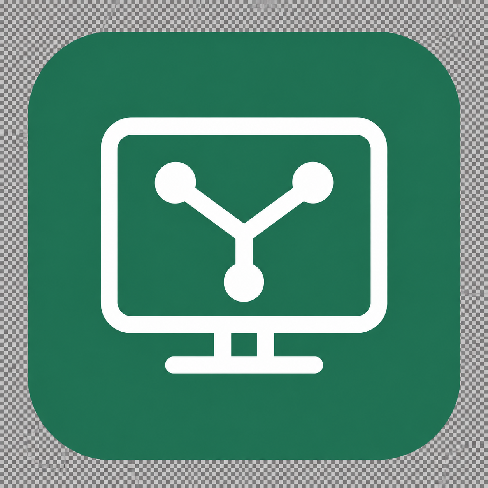

—
AUTO 跟隨系統語言；預設風格跟隨系統明暗模式。設定會自動儲存。
預設關閉。啟用後才會在 TCP 47823 接受通過密碼驗證的直連。
修改後會重新啟動本機 Client，現有連線將中斷。
變更後會重新啟動本機 Client，現有遠端連線將中斷。不支援的方式無法選取。
每行一個 IP。白名單啟用時，名單內免 Token、名單外禁止連線；關閉時所有來源皆需 Token。
連線需要獨立 Token；關閉後，Agent 將無法透過 MCP 操作。
P2P 遠端桌面
SITE DETAILS
連線時輸入連線密碼，可勾選「記住我」。
REMOTE CONNECTION
將開啟原生 遠端顯示 視窗。被控端必須已啟動 Client。
等待遠端回應…
自動取樣目前連線，無需操作遠端。結果不代表網路最高速度。
依目前連線的動態樣本計算，不代表網路最高速度；資料不足時不變更設定。